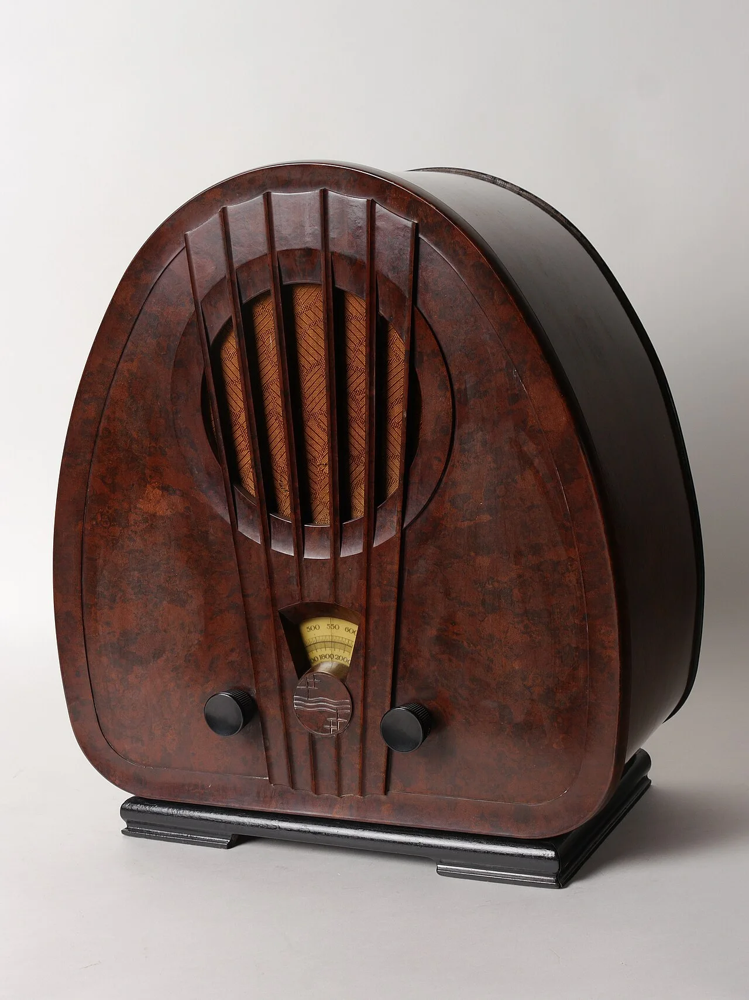

En una fotografía de 1965 conservada por el Banco de la República, Luis José Martínez explica a la familia Yarce Montoya cómo instalar las baterías de un radio transistorizado en Gómez Plata, Antioquia. La descripción procede del reverso de la copia física; identifica personas, lugar y operación. Es una escena menos espectacular que el nacimiento de una emisora y más útil para entenderla. Alguien debe saber poner el aparato en marcha antes de escuchar una clase. El radio, por sí solo, no enseña a instalar sus pilas, encontrar un horario, interpretar una cartilla ni trasladar una lección a la vida. Esa fotografía tiene derechos reservados y aquí se enlaza, no se reproduce. Su valor documental consiste en mostrar que Radio Sutatenza fue tanto un problema de diseño del servicio como una historia de transmisión. [1]
La experiencia comenzó en 1947 en Sutatenza, Boyacá, impulsada por José Joaquín Salcedo, y se amplió mediante Acción Cultural Popular, ACPO. La colección documental inscrita en el registro regional Memoria del Mundo de la UNESCO cubre el período 1947-1994. La fecha de comienzo no equivale al momento de máxima extensión, ni la fecha de cierre de la colección describe una sola forma estable de funcionamiento. Entre un transmisor inicial, las cartillas impresas en diferentes décadas y los discos de estudio hubo cambios materiales decisivos. Conviene evitar la imagen de un modelo que apareció completo de una vez. La escuela radiofónica se construyó al conectar medios, instituciones y participantes, y se reformó cuando cambiaron las posibilidades de recepción y enseñanza. [2][3]
En el primer sistema, una emisión podía organizar una clase porque existían personas y objetos alrededor del receptor. La guía de estudio de la Biblioteca Luis Ángel Arango describe la escucha en grupo, las cartillas básicas, el periódico El Campesino, la correspondencia, los dirigentes campesinos y la formación presencial complementaria. Un oyente no era necesariamente un usuario individual ante una pantalla o un aparato. Podía formar parte de una reunión con un auxiliar, un tablero, cuadernos y tareas. El diseño de la escuela consistía en coordinar esas piezas. Si una no llegaba, llegaba tarde o no se comprendía, la transmisión seguía existiendo pero el aprendizaje cambiaba. [4]
La diferencia entre distribuir información y sostener educación aparece en detalles ordinarios. La emisora necesitaba una señal y un horario; la cartilla, una ruta de entrega; el aula, alguien que convocara; la actividad, un modo de comprobar qué se había entendido. Un sistema puede alcanzar muchas localidades y ofrecer experiencias muy distintas en cada una. Por eso las cifras de cobertura, aunque necesarias, no bastan para contar cómo se vivía una clase. La UNESCO registra 687 localidades y 20.039 dirigentes formados a lo largo de la experiencia. Esas magnitudes describen alcance de una organización, no los resultados de aprendizaje de cada participante ni una distribución igualitaria de sus recursos. [2]
El aparato organizaba un encuentro
Una exposición del Banco de la República permite acercarse a los primeros receptores. En 1947, el transmisor inicial tenía alrededor de cien vatios y la emisión llegó a tres radios obtenidos para tres familias de la vereda Irzón. Un grupo de jóvenes campesinos tocó instrumentos de cuerda en aquella primera transmisión. La escena impide separar desde el comienzo la educación de otras formas de reunión y escucha. El proyecto nació en un lugar concreto con tecnologías limitadas; no como una plataforma abstracta que pudiera replicarse sin condiciones. Los receptores eran costosos y la electricidad no llegaba del mismo modo a todo el territorio rural. La alimentación por baterías, el peso y la recepción importaban tanto como el contenido de una clase. [3]
La misma exposición identifica modelos de frecuencia fija adquiridos después, incluidos receptores General Electric y Philips. Su sintonía concentrada podía simplificar una operación: encender y recibir la emisora prevista. También restringía la posibilidad de elegir otra señal en ese equipo. No hay que resolver esa tensión con una consigna a favor o en contra de la simplicidad. Para una escuela, la restricción puede favorecer la regularidad de la clase; para una familia, puede limitar otros usos de un objeto difícil de conseguir. El diseño de interfaz decide qué acción resulta fácil y cuál desaparece. Una decisión justificada por un objetivo educativo no deja por ello de tener consecuencias culturales. [3]
El receptor ilustrado en esta página, un Philips de 1933 conservado en Gante, no es uno de esos aparatos identificados por el archivo ACPO. Sirve como referencia sobre la presencia física que un radio de otra época podía tener en una casa; no prueba cómo era el modelo instalado en Irzón. La segunda fotografía muestra un lugar de Sutatenza en 2012, no una sesión de 1947. Mantener esa distinción en los pies de foto es parte del argumento. Una imagen contextual puede ayudar al lector a situar una pregunta, pero una foto ajena al caso no debe vestir una reconstrucción histórica. El archivo del Banco conserva imágenes de aparatos y escuelas reales; sus derechos requieren autorización antes de incorporarlas a RUMMOR. [1][3]


El tamaño y el peso de los radios anteriores a la miniaturización condicionaban la forma de reunirse. Un aparato que no se traslada con facilidad puede convertir una casa o un salón en un punto común de escucha. Más tarde, el transistor hizo posible llevar la voz al trabajo y escuchar de manera más individual. El Banco de la República describe ese cambio sin decir que una modalidad sustituyera por completo a la otra. Cambiaron las posibilidades de uso: oír una explicación en un grupo con auxiliar no es lo mismo que encontrarla durante una jornada laboral. Ninguna forma garantiza por sí sola mayor autonomía. La primera puede permitir discusión cercana; la segunda puede dar flexibilidad a quien no podía abandonar su tarea. Evaluarlas requiere observar qué personas disponían del aparato y del tiempo. [5]
Una clase también tiene una arquitectura temporal. La voz del profesor locutor avanza y no espera indefinidamente a que alguien encuentre una página. El impreso permanece, pero puede no explicar por sí solo la entonación, el ritmo o el ejemplo transmitido. El auxiliar interviene entre ambos tiempos: puede detenerse, pedir que se repita una operación y acompañar una respuesta. En un folleto de 1951 citado por la guía del Banco, el inicio de la clase involucra convocar a los estudiantes, tener el receptor sintonizado y preparar pizarra, cartillas y cuadernos. No hace falta idealizar ese procedimiento para reconocer su precisión operativa. La lección comienza antes de que hable la emisora. [4]
El espacio de aprendizaje, por tanto, no estaba definido únicamente por la distancia respecto al transmisor. Había que asegurar audibilidad, asiento, luz para leer, papel para escribir y una organización de la atención. No conocemos esos elementos para cada escuela y no corresponde imaginar un aula típica a partir de una única fotografía. El sistema ofrecía una pauta reproducible que lugares y participantes debían realizar con sus recursos. Esa distancia entre pauta y situación concreta aparece hoy en cualquier tecnología educativa. Un diseño puede estar correctamente especificado y fallar cuando faltan energía, tiempo, acompañamiento o posibilidad de hacer preguntas. La historia de Sutatenza invita a examinar esas dependencias sin llamar «resistencia al cambio» a cada dificultad material.
Una voz necesitaba una página y una respuesta
Las cartillas hacen visible una segunda capa del proyecto. La guía de estudio del Banco describe letras grandes, colores e ilustraciones de objetos vinculados con la vida rural. Un análisis académico de cinco cartillas básicas impresas en 1962 estudia su relación entre palabra e imagen y su adecuación a lectores en alfabetización o posalfabetización. La página no era un apéndice decorativo de la emisión: ofrecía una organización visual que podía recorrerse mientras se escuchaba y después de apagar el radio. Su tipografía, ejemplos y secuencia de ejercicios intervenían en qué podía reconocerse, recordarse y discutir. Para apreciar ese diseño hay que mirar páginas fechadas e identificadas, no una imagen genérica de campesinado. [4][6]
En un ejercicio reproducido en la guía, la palabra «agua» conduce de letras y sonidos a preguntas por el recurso y su valoración en contextos rurales y urbanos. La página reúne lectura, vocabulario, vida material y discusión. Ese tránsito muestra el propósito del modelo de Educación Fundamental Integral: las nociones de alfabeto, número, salud, economía y trabajo, y espiritualidad no se ofrecían como compartimentos enteramente separados. También permite una lectura crítica. Elegir «agua», «hogar» o «trabajo» como ejemplos aproxima el aprendizaje a situaciones conocidas, pero la institución decide qué interpretación y qué conducta espera asociar con ellos. El diseño pedagógico nunca es solo tamaño de letra; también selecciona un mundo de asuntos legítimos. [4]
Un libreto de Economía del hogar del 16 de febrero de 1970 deja ver cómo la emisión organizaba esa intervención. La ficha atribuye locución y libreto a Ana Judith Luque Rojas. El texto indica una recapitulación de la clase anterior, pide al auxiliar preguntar a los alumnos y marca cortinas sonoras entre partes. Luego desarrolla criterios de producción y de trabajo familiar. Aquí hay evidencia de una estructura interactiva, aunque la interacción no ocurriera por la misma señal en tiempo real: la locutora instruía a otra persona para activar la conversación local. También hay una orientación económica y moral específica. La lección sobre producir mejor no puede presentarse como una instrucción técnica aislada de la visión institucional sobre trabajo, familia y progreso. [7]
El libreto importa además por sus nombres y sus silencios. Reconocer a la libretista y locutora evita contar la radio como una invención de un solo fundador. A la vez, el archivo disponible no permite deducir quién escribió cada cartilla, quién dibujó sus imágenes o qué contribución hizo cada auxiliar en una escuela determinada. Una investigación visual de ACPO identificó múltiples productores de imágenes, según la presentación de Zenaida Osorio en la Universidad Nacional. Ese dato abre una tarea editorial, no un crédito colectivo automático. Si una ilustración se usa para analizar una página concreta, RUMMOR tendría que seguir su ficha y acreditar a la persona o institución correspondiente cuando sea identificable. [8]
El semanario El Campesino, fundado en 1958, prolongaba la conversación fuera del horario de clase. Informaba sobre la programación, la llegada de radios y la formación de líderes, además de otras materias. Una fotografía de Manuel H conservada por el Banco muestra a campesinos leyendo el periódico. Su existencia impide describir a los destinatarios de ACPO solo como oyentes pasivos. Leer, comentar, solicitar materiales y seguir noticias eran acciones distintas de recibir una lección. Sin embargo, la imagen tampoco demuestra que todos los lectores pudieran influir del mismo modo en la línea editorial. El periódico ampliaba la circulación de la institución y tenía una agenda. La pregunta crítica es qué voces entraban en sus páginas y qué asuntos quedaban definidos desde la dirección. [9]
Las cartas permiten acercarse a una respuesta menos unilateral. La guía del Banco describe tareas, evaluaciones y correspondencia entre alumnos, dirigentes y profesores locutores. Otra investigación sobre las conversaciones musicales conserva solicitudes, comentarios de sintonía, coplas y mensajes vinculados con los Tolimenses. La radio no producía únicamente una audiencia que escuchaba en silencio: también generaba escritura y envío. Esos documentos son evidencia de participación y de deseos distintos, no una muestra representativa de todas las familias campesinas. La persona que escribía debía disponer de papel, tiempo, una ruta de correo y cierta confianza en que habría lectura o respuesta. La retroalimentación tenía una infraestructura material propia. [4][10]
Mirar las cartas obliga a formular la pregunta que una historia triunfal suele omitir: ¿qué hicieron los participantes con lo que recibieron? El archivo contiene rastros para estudiarlo, pero no podemos sustituir ese trabajo por la declaración de objetivos de ACPO. Una familia podía aprovechar una noción de salud, discutir una recomendación agrícola, preferir una canción, pedir un libro o simplemente escuchar por compañía. No todas esas acciones dejan huella escrita. El diseño de un sistema de comunicación determina qué respuestas puede recoger y cuáles se le escapan. Una evaluación basada solo en registros institucionales mide aquello que la institución supo pedir y conservar. La ausencia de una carta no equivale a ausencia de aprendizaje ni a conformidad.
La música y el entretenimiento tuvieron un lugar que impide reducir la emisora a manual hablado. El Banco documenta que los campesinos escuchaban también otras estaciones, radionovelas, transmisiones deportivas y canciones, y que ACPO utilizó la música para sus campañas. Una persona que sintoniza por gusto puede permanecer para una lección; otra puede buscar una canción y no aceptar la campaña que la acompaña. La forma cultural de la radio excede el propósito educativo que una organización le asigna. La atención no es un recurso neutro que se captura y convierte sin fricción. El diseño de programación debía negociar ritmos de estudio, trabajo y descanso, y competía con otros usos del medio que los oyentes podían valorar más. [5][10]
El sistema cambió de soporte
Desde 1973, el Disco-estudio de ACPO añadió grabaciones en acetato, cartillas, cuadernos, lápices, tablero y un tocadiscos con radio. Según la exposición del Banco, buscaba prolongar el tiempo de capacitación más allá de la duración de la emisión. Es una respuesta concreta a un límite de la radiodifusión: si la clase pasa una vez, hay poco margen para repetirla en el momento necesario. La grabación permite otro tempo, pero introduce costos de aparato, soporte, distribución y mantenimiento. No es la simple sustitución de una tecnología por otra más moderna. El sistema se redistribuye: parte de la decisión sobre cuándo escuchar se mueve del emisor hacia el lugar de aprendizaje. [5]
La ampliación técnica se acompañó de una infraestructura editorial. Un estudio publicado por el Banco de la República recuerda las cartillas, la Biblioteca del Campesino, El Campesino y la Editorial Andes, además de institutos de formación y oficinas regionales. Esa combinación permite llamar a ACPO una industria cultural en sentido descriptivo: producía y distribuía formatos distintos a gran escala. No borra su origen religioso ni convierte toda la actividad en una empresa comercial convencional. Cada soporte cumplía una función: la emisión convocaba y pautaba; el libro profundizaba; el periódico sostenía periodicidad; la carta permitía una forma de retorno. La eficiencia del conjunto no puede calcularse sumando ejemplares sin preguntar por uso y acceso. [11]
Esa escala tuvo una política. La Educación Fundamental Integral proponía maneras de leer, contar, cuidar la salud, producir y vivir en comunidad. Su idea de «vivir mejor» no era un hecho natural que la tecnología llevara al campo: era una visión de desarrollo formulada por una organización católica en relación con políticas públicas, autoridades y donantes. Investigaciones históricas han examinado la educación y la comunicación de ACPO en esos términos. Una revista sobre diseño debe registrar la ambición y sus contradicciones: facilitar acceso a conocimientos nuevos podía ampliar capacidades de los participantes y, a la vez, situar el saber rural previo como un problema que había que corregir. La existencia de una cartilla útil no resuelve por sí sola esa relación. [6][11]
Tampoco conviene hacer del campesinado una categoría uniforme. La fotografía de Gómez Plata identifica a una familia y a un líder regional; la de Nariño publicada por El Campesino muestra otra escuela en otro momento. Entre ellas hay territorios, hogares, acentos, economías y condiciones de recepción diferentes. Las mujeres aparecen en papeles de locución, auxilio, aprendizaje y organización, pero no podemos contar su experiencia completa a partir de las pocas piezas aquí citadas. La pregunta por quién enseñó y quién pudo decidir el currículo requiere más expedientes y testimonios. Un archivo extenso es una posibilidad de investigación, no una licencia para usar sus habitantes como ejemplos intercambiables. [1][7][9]


La colección de ACPO, donada a la Biblioteca Luis Ángel Arango, reúne impresos, audios, fotografías, correspondencia y otros materiales. El Banco indica que las solicitudes de reproducción deben dirigirse a la Fundación ACPO, titular de los derechos. La disponibilidad de una imagen en pantalla facilita estudiarla y enlazar su ficha; no autoriza automáticamente integrarla en una publicación comercial. Para una futura versión visual de este artículo, la pareja de imágenes decisiva sería una escena fechada de instalación o escucha y una página específica de cartilla, acompañadas de crédito y permiso. El receptor tipológico y la vista territorial que hoy ocupan la página son contextos honestamente rotulados, no sustitutos documentales de esas piezas. [1][3]
La comparación con la educación digital actual tiene sentido si conserva esas diferencias históricas. Una aplicación puede poner lecciones en millones de teléfonos y seguir sin resolver lectura compartida, suministro de dispositivos, conectividad, apoyo local o posibilidad de corregir al emisor. También puede ofrecer repeticiones, accesibilidad y rutas de estudio que una emisión lineal no permitía. Sutatenza no demuestra qué tecnología conviene ahora; enseña a formular la unidad correcta de análisis. No basta medir cuántas personas pudieron abrir el contenido. Hay que observar qué podían hacer después, quién las acompañaba, qué respuestas eran escuchadas y qué mundo proponían los ejemplos de la lección.
En la foto de 1965, el acto de poner unas baterías es pequeño y decisivo. Conecta un diseño técnico con una práctica familiar. La radio no termina cuando la voz sale del estudio ni la escuela empieza cuando alguien la oye. Entre ambos momentos hay objetos, palabras impresas, horarios, personas que explican, cartas que regresan y decisiones sobre qué vale la pena aprender. Esa red hizo posible Radio Sutatenza; también dejó límites y asimetrías que merecen investigación. La escuela tenía un dial. Su diseño más importante estaba en las relaciones que el dial, por sí solo, no podía construir.
Fuentes.
- Banco de la República, fotografía «Apertura de un Radio Sutatenza para poner las pilas», 1965. Identificación de personas, lugar y derechos reservados.
- UNESCO, Colección documental de Radio Sutatenza y ACPO. Registro regional Memoria del Mundo, inscripción 2013.
- Banco de la República, exposición y boletín sobre ACPO. Receptores, archivo, condiciones de consulta y reproducción.
- Banco de la República, Escuela radiofónica campesina, guía de estudio, 2017. Red de medios y ejercicios con cartillas.
- Banco de la República, «El medio y el remedio: la radio». Transformaciones en la escucha y Disco-estudio.
- Victoria E. Peters R. y Milena Trujillo, análisis de las cartillas ACPO de 1962. Estudio de diseño visual y pedagogía de las cartillas.
- ACPO, libreto de Economía del hogar, 16.02.1970. Locución y libreto atribuidos a Ana Judith Luque Rojas.
- Universidad Nacional de Colombia, presentación de Zenaida Osorio sobre el archivo fotográfico ACPO. Investigación sobre productores de imágenes.
- Banco de la República, fotografía «Campesinos con el periódico». *El Campesino* y lectura compartida.
- Banco de la República, «Charlas musicales entre Radio Sutatenza y sus alumnos». Correspondencia y música en la relación con oyentes.
- Hernando Bernal Alarcón, «Radio Sutatenza: un modelo colombiano de industria cultural y educativa», *Boletín Cultural y Bibliográfico*.
Investigación documental; sin entrevistas a antiguos estudiantes ni medición propia de resultados educativos. Las dos imágenes del artículo son contextuales. La Fundación ACPO conserva los derechos del archivo original.
Fuentes consultadas el 19.11.2026. Análisis e interpretación: RUMMOR. Edición privada para revisión.